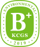

지속가능경영
ESG 평가
| 평가연도 | 환경 (E) | 사회 (S) | 지배구조 (G) | 종합 |
|---|---|---|---|---|
| 2024 |  |

|

|

|
| 2023 |
|
|
|
KCGS(Korea Institute of Corporate Governance and Sustainability.)는 국내에서 가장 공신력이 있는 ESG 평가 및 의안 분석 기관으로 상장 기업을 대상으로 환경(E), 사회(S), 지배구조(G)에 대한 평가를 진행합니다.
글로벌 이니셔티브
| 평가연도 | 환경 (E) | 사회 (S) | 지배구조 (G) | 종합 |
|---|---|---|---|---|
| 2024 |
|
|
|
|
| 2023 |
|
|
|
KCGS는 국내에서 가장 공신력이 있는 ESG 평가 및 의안 분석 기관으로 상장 기업을 대상으로 환경(E), 사회(S), 지배구조(G)에 대한 평가를 진행합니다.
| 평가연도 | ESG 리스크 평가 |
|---|---|
| 2024 | 17.8 점 |
- SUSTAINANLYTICS는 미국 금융정보업체 모닝스타(Morningstar)의 자회사로 전 세계 42개 산업에 속한 1만 5,000여개 기업을 대상으로 매년 ESG 리스크 지수를 평가해 발표하고 있습니다.
- ESG 리스크 평가는 0~50 사이의 점수와 5단계 등급으로 산출하고, 결과 점수 및 등급이 낮을수록 기업의 ESG 리스크가 낮음을 의미합니다.
| 평가연도 | FTSE4Good 지수 |
|---|---|
| 2024 | 'Retailers' 부문 편입 |
- FTSE4Good 지수는 런던증권거래소 산하의 파이낸셜타임스 스톡익스체인지(FTSE) 러셀이 평가해 발표하는 ESG 평가 전문 지수로 세계 약 8,000개 기업을 대상으로 ESG 성과를 평가하고 있습니다.
- 환경(E), 사회(S), 지배구조(G) 등 300여개의 세부평가 항목 중 하나라도 기준을 충족하지 못하면 편입이 불가능한 엄격한 평가 기준으로 유명합니다.